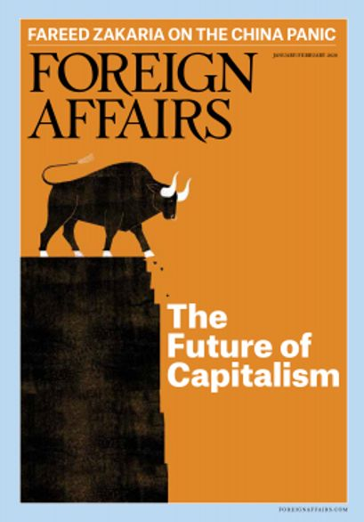

收录于合集

作品简介
【作者】 Elbridge A. Colby，2017年至2018年美国国防部战略与部队发展副助理部长；A. Wess Mitchell，2017年至2019年任主管欧洲及欧亚事务的美国助理国务卿。
【编译】 石雨宸（国政学人编译员，南开大学周恩来政府管理学院）
【校对】 刘金晶
【审核】 李博轩
【排版】 杨 洋
【来源】 Elberidge A. Colby, A. Wess Mitchell. (2020). The Age of Great-Power Competition: How the Trump Administration Refashioned American Strategy. Foreign Affairs, 99 (1), 118-130.
期刊简介
《外交》（Foreign Affairs），创刊于1922年，是美国外交关系委员会发布的国际关系和美国外交政策的美国杂志，被誉为“美国最具影响力的外交政策杂志”之一。根据2018年的期刊引文报告（Web Of Science）, 该期刊的影响因子为4.390，在“国际关系”类别的91种期刊中排名第3。在其悠久的历史中，该杂志发表了许多具有开创性的文章，包括乔治·凯南(George Kennan) 1947年发表的X Article，以及塞缪尔·亨廷顿(Samuel P. Huntington) 1993年发表的《文明的冲突》。此外，重要学者、政府官员和政策领导人经常出现在该杂志的页面上。
大国竞争时代：特朗普政府如何重塑美国战略
The Age of Great-Power Competition: How the Trump Administration Refashioned American Strategy
内容提要
大国竞争的时代正在到来， 这个新时代的标志不再是唯美独尊的统治地位，而是崛起的中国和复兴的俄罗斯正削弱美国领导地位，重塑有利于自身的全球政治。 在奥巴马政府执政时期，美国的政策主要是被动反应，特朗普政府认识到大国竞争需要全面重建美国的外交政策，且基于这一认识，美国已正式发布相关战略报告。这种对大国竞争重视的转变以及由此带来的对美国军事、经济和外交行为的重新安排可能将在很长一段时间内推动总统领导下的美国外交政策发展。
文章导读
一、不作为的代价
多年来美国分析人士一直在争论中国的崛起与俄罗斯的复兴对美国利益意味着什么。“大国竞争”（great-power competition）自在《美国国家安全战略报告》和《美国国防战略报告》中出现以来就引起热议。今天，美国面临的竞争对手比近期历史上任何时候都更强大、更有雄心。中国首先在印太地区展示实力并试图在全球“占据主导地位”，很可能成为美国历史上最强大的竞争对手。俄罗斯虽实力有限，但也正努力在东欧恢复其优势地位，加速结束西方的世界主导地位。 美国在经济和军事上强大的主导地位使政府在苏联解体后的近三十年时间里都没有考虑过如何应对强大的对手。其他大国通常是合作伙伴，并等待美国解决核扩散、恐怖主义、气候变化等全球问题。 而如今，中国已成为全球商业枢纽，并进行大规模军事建设，旨在以亚洲为基点并向全世界投射力量，通过“一带一路”倡议及相关计划扩大其影响力。同时，俄罗斯也重整军事力量，入侵格鲁吉亚、吞并克里米亚、并在乌克兰东部发动叛乱，有计划地恢复其在非洲、拉美和中东的军事、经济与外交影响力。 但长期以来美国一直拒绝承认这一现实，相反，美国领导人依旧宣告着与俄罗斯的“接触时代”，并始终相信中国作为国际体系中“负责任的利益相关者”的潜力。 2009年，在俄罗斯入侵格鲁吉亚数月后，美国选择与俄罗斯“重启”关系。美国还一直努力加强美中关系，甚至期望建立美中“G -2”来领导国际社会。但中国在南海诸岛的军事化建设及其展现的决心使美国不得不重新评估对华战略，2014年的克里米亚问题也使美俄间的“重启”被搁置。到奥巴马政府结束时，美国的路线已经明显偏离了正轨。 随之而来的美国政策修正只是事后被动的反应性调整。美国将表面上的稳定置于追求明确的国家利益之上，多年来对中国的积极行动视而不见，且“寄希望于俄罗斯能够维持当前国际现状。 ”这让美国为此付出了高昂代价，造成东亚和欧洲的盟友对美国的不信任。
二、方向修正
特朗普政府比其前任更加现实和坦率。正如基辛格在2018年《金融时报》中说的那样，“特朗普可能是历史上不时出现的那些标志着一个时代结束、并迫使其放弃伪装的人物之一”。新政府摆脱了单极主义的范式，为新的大战略创造了机会。美国在2017年发布的《美国国家安全战略报告》和2018年发布的《美国国防战略报告》，以及其在印太与欧洲地区的辅助性区域战略中，都已明确指出美国与中俄的关系具有竞争性，并将着重保持相对中俄的竞争优势，大国竞争现在将成为美国国家安全的焦点。 这种转变的背后不是盲目对抗，而是对二战以来美国外交政策的主要目标的延续：包括美国盟国在内的各国可以自由制定战略而不受地区主导国家的干涉。该战略同时适用于遭受中俄压力的亚洲国家和欧洲国家。 但面对不断崛起的强大中国和机会主义的俄罗斯，美国只有确保自己的力量和经济活力、在地区力量平衡中保持优势，才能实现自由开放世界的目标。当前， 美国军方已明确，最关心的问题是如何有效地保护台湾地区和波罗的海国家免受中国或俄罗斯的潜在攻击 ，这在《美国国防战略报告》、《印太战略报告》（2019）与其他公开声明中均有体现。美国防部的战略逐步从“沙漠风暴行动”模式转变到可以立刻抵御攻击的模式，并逐步调整国防预算，易受攻击的短程战斗机和大型水陆两栖舰艇逐步被更隐秘的远程轰炸机和潜艇、无人驾驶舰艇和飞机、远程陆基导弹和大炮及大量精确的穿透性弹药所替代，但新武器的使用方法尚处于实验阶段中。在经济方面，很多人曾认为美国不能承受美中经济关系的动荡，因此必须和中国保持经济关系稳定。如今特朗普政府在两党的大力支持下对从中国进口的商品加征关税，虽然中美贸易摩擦也带来了美国中产阶级和工人阶级的痛苦，但中国对美国持续的不公平贸易只会使情况更差。相比之下，美国的经济压力有助于将迫切需要的贸易政策调整提上议程。在欧洲，长期以来即使贸易逆差不断加剧，美国也一直不愿就欧盟针对美国产品设置的单边关税和非关税壁垒与欧盟对质。特朗普政府则试图通过休克疗法实现主张，当然这种激进做法也可能引发跨大西洋关系的潜在溢出效应，破坏美欧共同对抗中国的基础。 美国也正在磨砺手中可使用的强大商业工具。特朗普政府和国会对海外私人投资公司进行全面改革，为亚欧的脆弱国家提供中国融资的替代方案。 如2018年10月通过的《更好地利用投资引导开发法案》（BUILD）为各国提供了替代“一带一路”倡议的融资选择；国会提出的《平等法案》（EQUITABLE Act）将要求中国公司遵守与美国公司在美国证券交易所上市相同的披露规则。美国还积极地警告其他国家，中国的电信投资可能会让中国获得并利用它们的敏感技术。外交领域的优先次序也发生了变化。 分别在2017年与2018年发布的《美国国家安全战略报告》和《美国国防战略报告》终于纠正了过分关注中东的错误方向，指出亚洲和欧洲地区存在对美国地位威胁最大的国家。美国的主要目标应该是限制这两个地区内大国的影响力，以免地区均势朝有利于这些大国的方向发展。 相比冷战结束后各国都淡化大国竞争的战略，这是个可喜的变化。特朗普政府首先在联盟的帮助下努力与中俄保持平衡。在欧洲，仅去年一年欧洲的国防开支就因此增加了340亿美元。美国在亚洲则明确表示将保护在南海的菲律宾飞机和船只，增加对台湾地区的外交和军事支持，并加强与印度和越南的政治和军事关系。其次，在一些最近被忽视的地区，美国正利用其经济和政治影响力加强接触和援助，以对抗中俄在那些地区已经取得的进展。目前中国正加强在中欧、西巴尔干和地中海东部的外交影响力，美国留下的真空使得中俄趁机而入。在这些地区的国家中，美国加强对善治和反腐败的支持，扩大青年和文化交流，并就与中俄结盟的长期风险向盟友发出了警告。在亚洲，美国通过成立的国际发展金融公司（International Development Finance Corporation）和提供新的融资渠道的BUILD法案，提高了与中国竞争力；美国还通过“印太透明倡议”推进亚洲地区的善治和反腐败努力，并开始关注所罗门群岛等太平洋国家。虽然美国目前的政策调整还是不平衡和停滞的，但至少现在有了一个取得两党共识的重塑外交政策的模板，并很可能在未来政府中延续下去。
三、现在什么最重要
美国已经在军事、经济和外交上表明了对竞争对手采取更具竞争性战略的意愿和能力。在美国国内，这种路线调整获得了国会广泛的两党支持，对中国的强硬态度和对俄罗斯威胁的重新审视都成为两党共识。在国际上美国的政策调整也带来了变化：欧洲盟友增加了国防开支，并通过制裁俄罗斯保持统一战线；美国与印度、日本和波兰的国防关系回暖；跨国公司正在将其供应链从中国转移到其他地区。但中国丝毫没有要放弃追求亚洲主导地位的迹象，俄罗斯似乎也不太可能与西方修复关系，中俄关系的不断加深需要美国做出准备。 为了阻止中国在亚洲及其他地区占据主导地位，美国必须维持有利的地区均势。其战略核心应该是在亚洲和欧洲建立和维持必要的联盟。由于美国难以依靠自身力量平衡中国和俄罗斯，所以其必须寻求更多的盟友，以提供更多物质保障，并在必要时施加实际压力。 但若因此造成的政治分歧对联盟内部结构造成了破坏，其可能面临更大风险。美国的联盟架构仍反映着单极时代的安排，当时美国几乎不需要帮助就能保证其伙伴的安全。因此美国的大部分盟国武装程度极低。日本虽然在对华防御中发挥着核心作用，但其现在的国防支出与1996年持平，而中国则增加了一个量级；在欧洲，盟国部署的武装力量也远不足以减轻俄罗斯对北约东部成员国的威胁。在美国背负超过23万亿美元的国债的情况下，如何使盟国承担更多义务而不施加过多压力，将是未来几年的重大挑战之一。 另一个问题是美国的联盟构成。美国不必在亚洲复制北约，其关键是依靠联盟试探中国对地区霸权的态度。这样的联盟可能是正式联盟（澳、日、菲、韩）、准联盟（台湾地区）和不涉及正式安全保证的伙伴关系（印度和越南）三者的混合物。 日美印的关系将巩固该联盟，但还需要美国积极的领导作用，同时，东南亚小国将是美中战略竞争的重点。在欧洲，美国需要调整与北约的关系以更好地应对中俄的挑战。自俄罗斯在乌克兰争夺领土以来，北约已开始调整其部队状态，但还需要更多改变来阻止俄罗斯在乌边界的可能动作，而美国同样需要一支可迅速部署的部队以抗衡俄罗斯的领土侵略行为。鉴于美国需要在亚洲投入更多资源，北约盟国需要增强其军队与美国军队整合的能力。由于美欧贸易分歧的存在，美国在促使欧洲抵制中国的贸易和基础设施伙伴关系的努力不太成功，但欧洲国家应该认识到其关税和非关税壁垒不对称带来的长期地缘政治后果，并改变那些限制大型美国公司而利于中俄两国国有企业的监管方式。美国政府则应该认识到，为更加互惠而进行的盟友间贸易斗争并不像与中国进行贸易战那样紧迫。美国不能立即解除所有不平等的贸易关系，对华统一战线仍应是美国的首要关切，与印度和日本的经济关系同样如此。该战略的总体目标不是使美国和中国经济完全脱钩，也不是迫使美国盟国站队（尽管美国的长期目标应是建立一个包括亚洲和欧洲盟友的低壁垒的西方贸易区），而是为了更好地保护知识产权和敏感技术，降低中国的经济影响力。加拿大、日本、菲律宾、韩国、中欧地区等已经感受到了中国经济带来的压力。对所有国家来说，与中国经济的融合都是必要的，但为了国家主权和利益，必须限制中国将风险转化为胁迫性杠杆的能力。此外，美国应设法将中俄拉开距离。与西方深深疏远的俄罗斯甚至为了向中国靠拢愿意牺牲其自主权，包括允许华为进入俄罗斯、在能源和军事上加深接触。美国需要为威慑作好准备，并等待更加有利的开放，包括加强北约在波罗的海和中欧的威慑力，并在叙利亚和乌克兰等的侵略行动中制裁俄罗斯，直到俄罗斯认为武力代价过高而与美国进行缓和。即使在盟友的帮助下，美国也无法取得对中国和俄罗斯的军事优势。美国的主要目标应是提供足够的防御以保证同盟安全，确保他们不会在事实上被占领、被封锁与被胁迫，并可能演变为“拒止防御战略”（denial defense）。基于当今世界的精确武器和强大的情报、瞄准和数据分析技术，这一确保还是可行的。但这还需要能够承受第一次攻击的武装部队来一同对抗中俄占领领土。 实现这一目标需要美国搁置甚至牺牲某些承诺，这在单极世界中并不必要，但在大国竞争时代，美国必须缩减在次要和周边地区的力量。 美国的中东战略不应是稳定秩序并维护其“全球规范”，而应集中寻找具有成本效益的方式来打击跨国恐怖主义。同样，对于伊朗等国也不必颠覆其政府，打击其在波斯湾的霸权即可。同时美国还应借助代理人和离岸部队以逐渐减少美军在阿富汗、伊拉克和叙利亚的部署。
四、自满的终结
不论是特朗普对中国的攻击还是持续困扰的中东危机，美国正在参与一场决定由谁主宰在21世纪的世界运转方式的斗争。即将到来的大国竞争时代促使美国需要重新评估在军事、经济和外交方面的优先任务，这意味着美国需要放弃原先不受约束的军事统治和不合适的武器平台，同时更多地强调盟友付出；意味着美国需要在不损害对国际自由贸易的承诺的前提下提高战略领域的技术优势；还意味着更集中地关注亚洲和欧洲。美国过去那些诸如对竞争对手的善意假定、削弱国家安全的经济政策以及以政治统一名义掩盖下盟友的重大缺陷等令人昏昏沉沉的自满时刻将不复存在。没有人抱着完全放弃地缘政治竞争的希望而退出。美国只有在最重要的地方确保有利的权力均衡，并系统协调其社会、经济和盟友资源，才能在社会经济和盟友安全等方面为大国竞争做好长期准备，才能最终保障其自由社会的安全与繁荣。
_ ** _ ** _ ** _
本文由国政学人独家编译推荐，文章观点不代表本平台观点，转载请联系授权。**__